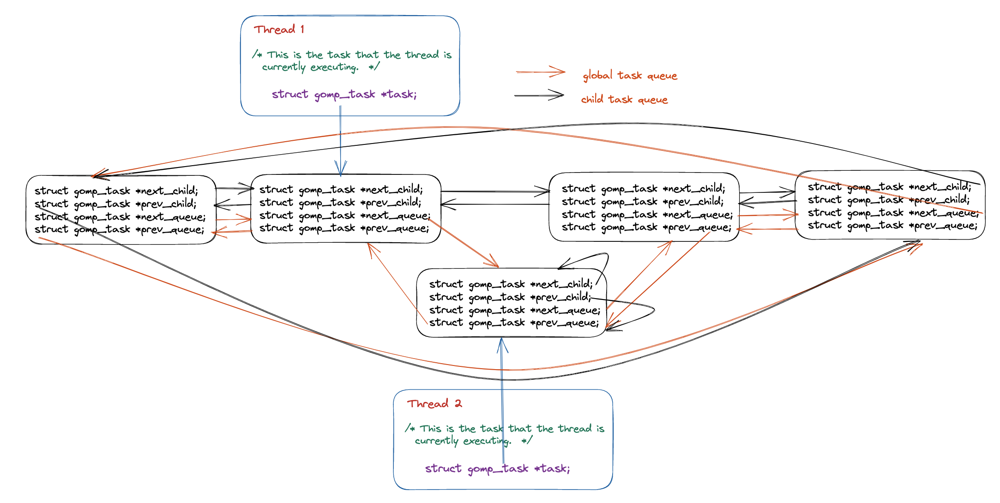

OpenMP task construct 实现原理以及源码分析
前言
在本篇文章当中主要给大家介绍在 OpenMP 当中 task 的实现原理，以及他调用的相关的库函数的具体实现。在本篇文章当中最重要的就是理解整个 OpenMP 的运行机制。
从编译器角度看 task construct
在本小节当中主要给大家分析一下编译器将 openmp 的 task construct 编译成什么样子，下面是一个 OpenMP 的 task 程序例子：
#include <stdio.h>
#include <omp.h>
int main()
{
#pragma omp parallel num_threads(4) default(none)
{
#pragma omp task default(none)
{
printf("Hello World from tid = %d\n", omp_get_thread_num());
}
}
return 0;
}
首先先捋一下整个程序被编译之后的执行流程，经过前面的文章的学习，我们已经知道了并行域当中的代码会被编译器编译成一个函数，关于这一点我们已经在前面的很多文章当中已经讨论过了，就不再进行复述。事实上 task construct 和 parallel construct 一样，task construct 也会被编译成一个函数，同样的这个函数也会被作为一个参数传递给 OpenMP 内部，被传递的这个函数可能被立即执行，也可能在函数 GOMP_parallel_end 被调用后，在到达同步点之前执行被执行（线程在到达并行域的同步点之前需要保证所有的任务都被执行完成）。整个过程大致如下图所示：

上面的 OpenMP task 程序对应的反汇编程序如下所示：
00000000004008ad <main>:
4008ad: 55 push %rbp
4008ae: 48 89 e5 mov %rsp,%rbp
4008b1: ba 04 00 00 00 mov $0x4,%edx
4008b6: be 00 00 00 00 mov $0x0,%esi
4008bb: bf db 08 40 00 mov $0x4008db,%edi
4008c0: e8 8b fe ff ff callq 400750 <GOMP_parallel_start@plt>
4008c5: bf 00 00 00 00 mov $0x0,%edi
4008ca: e8 0c 00 00 00 callq 4008db <main._omp_fn.0>
4008cf: e8 8c fe ff ff callq 400760 <GOMP_parallel_end@plt>
4008d4: b8 00 00 00 00 mov $0x0,%eax
4008d9: 5d pop %rbp
4008da: c3 retq
00000000004008db <main._omp_fn.0>:
4008db: 55 push %rbp
4008dc: 48 89 e5 mov %rsp,%rbp
4008df: 48 83 ec 10 sub $0x10,%rsp
4008e3: 48 89 7d f8 mov %rdi,-0x8(%rbp)
4008e7: c7 04 24 00 00 00 00 movl $0x0,(%rsp) # 参数 flags
4008ee: 41 b9 01 00 00 00 mov $0x1,%r9d # 参数 if_clause
4008f4: 41 b8 01 00 00 00 mov $0x1,%r8d # 参数 arg_align
4008fa: b9 00 00 00 00 mov $0x0,%ecx # 参数 arg_size
4008ff: ba 00 00 00 00 mov $0x0,%edx # 参数 cpyfn
400904: be 00 00 00 00 mov $0x0,%esi # 参数 data
400909: bf 15 09 40 00 mov $0x400915,%edi # 这里就是调用函数 main._omp_fn.1
40090e: e8 9d fe ff ff callq 4007b0 <GOMP_task@plt>
400913: c9 leaveq
400914: c3 retq
0000000000400915 <main._omp_fn.1>:
400915: 55 push %rbp
400916: 48 89 e5 mov %rsp,%rbp
400919: 48 83 ec 10 sub $0x10,%rsp
40091d: 48 89 7d f8 mov %rdi,-0x8(%rbp)
400921: e8 4a fe ff ff callq 400770 <omp_get_thread_num@plt>
400926: 89 c6 mov %eax,%esi
400928: bf d0 09 40 00 mov $0x4009d0,%edi
40092d: b8 00 00 00 00 mov $0x0,%eax
400932: e8 49 fe ff ff callq 400780 <printf@plt>
400937: c9 leaveq
400938: c3 retq
400939: 0f 1f 80 00 00 00 00 nopl 0x0(%rax)
从上面程序反汇编的结果我们可以知道，在主函数当中仍然和之前一样在并行域前后分别调用了 GOMP_parallel_start 和 GOMP_parallel_end，然后在两个函数之间调用并行域的代码 main._omp_fn.0 ，并行域当中的代码被编译成函数 main._omp_fn.0 ，从上面的汇编代码我们可以看到在函数 main._omp_fn.0 调用了函数 GOMP_task ，这个函数的函数声明如下所示：
void
GOMP_task (void (*fn) (void *), void *data, void (*cpyfn) (void *, void *),
long arg_size, long arg_align, bool if_clause, unsigned flags);
在这里我们重要解释一下部分参数，首先我们需要了解的是在 x86 当中的函数调用规约，这一点我们在前面的文章当中已经讨论过了，这里只是说明一下：
| 寄存器 | 含义 |
|---|---|
| rdi | 第一个参数 |
| rsi | 第二个参数 |
| rdx | 第三个参数 |
| rcx | 第四个参数 |
| r8 | 第五个参数 |
| r9 | 第六个参数 |
根据上面的寄存器和参数的对应关系，在上面的汇编代码当中已经标注了对应的参数。在这些参数当中最重要的一个参数就是第一个函数指针，对应的汇编语句为 mov $0x400915,%edi，可以看到的是传入的函数的地址为 0x400915，根据上面的汇编程序可以知道这个地址对应的函数就是 main._omp_fn.1，这其实就是 task 区域之间被编译之后的对应的函数，从上面的 main._omp_fn.1 汇编程序当中也可以看出来调用了函数 omp_get_thread_num，这和前面的 task 区域当中代码是相对应的。
现在我们来解释一下其他的几个参数：
- fn，task 区域被编译之后的函数地址。
- data，函数 fn 的参数。
- cpyfn，参数拷贝函数，一般是 NULL，有时候需要 task 当中的数据不能是共享的，需要时私有的，这个时候可能就需要数据拷贝函数，如果有数据需要及进行拷贝而且这个参数还为 NULL 的话，那么在 OpenMP 内部就会使用 memcpy 进行内存拷贝。
- arg_size，参数的大小。
- arg_align，参数多少字节对齐。
- if_clause，if 子句当中的比较结果，如果没有 if 字句的话就是 true 。
- flags，用于表示 task construct 的特征或者属性，比如是否是最终任务。
我们现在使用另外一个例子，来看看参数传递的变化。
#include <stdio.h>
#include <omp.h>
int main()
{
#pragma omp parallel num_threads(4) default(none)
{
int data = omp_get_thread_num();
#pragma omp task default(none) firstprivate(data) if(data > 100)
{
data = omp_get_thread_num();
printf("data = %d Hello World from tid = %d\n", data, omp_get_thread_num());
}
}
return 0;
}
上面的程序被编译之后对应的汇编程序如下所示：
00000000004008ad <main>:
4008ad: 55 push %rbp
4008ae: 48 89 e5 mov %rsp,%rbp
4008b1: 48 83 ec 10 sub $0x10,%rsp
4008b5: ba 04 00 00 00 mov $0x4,%edx
4008ba: be 00 00 00 00 mov $0x0,%esi
4008bf: bf df 08 40 00 mov $0x4008df,%edi
4008c4: e8 87 fe ff ff callq 400750 <GOMP_parallel_start@plt>
4008c9: bf 00 00 00 00 mov $0x0,%edi
4008ce: e8 0c 00 00 00 callq 4008df <main._omp_fn.0>
4008d3: e8 88 fe ff ff callq 400760 <GOMP_parallel_end@plt>
4008d8: b8 00 00 00 00 mov $0x0,%eax
4008dd: c9 leaveq
4008de: c3 retq
00000000004008df <main._omp_fn.0>:
4008df: 55 push %rbp
4008e0: 48 89 e5 mov %rsp,%rbp
4008e3: 48 83 ec 20 sub $0x20,%rsp
4008e7: 48 89 7d e8 mov %rdi,-0x18(%rbp)
4008eb: e8 80 fe ff ff callq 400770 <omp_get_thread_num@plt>
4008f0: 89 45 fc mov %eax,-0x4(%rbp)
4008f3: 83 7d fc 64 cmpl $0x64,-0x4(%rbp)
4008f7: 0f 9f c2 setg %dl
4008fa: 8b 45 fc mov -0x4(%rbp),%eax
4008fd: 89 45 f0 mov %eax,-0x10(%rbp)
400900: 48 8d 45 f0 lea -0x10(%rbp),%rax
400904: c7 04 24 00 00 00 00 movl $0x0,(%rsp) # 参数 flags
40090b: 41 89 d1 mov %edx,%r9d # 参数 if_clause
40090e: 41 b8 04 00 00 00 mov $0x4,%r8d # 参数 arg_align
400914: b9 04 00 00 00 mov $0x4,%ecx # 参数 arg_size
400919: ba 00 00 00 00 mov $0x0,%edx # 参数 cpyfn
40091e: 48 89 c6 mov %rax,%rsi # 参数 data
400921: bf 2d 09 40 00 mov $0x40092d,%edi # 这里就是调用函数 main._omp_fn.1
400926: e8 85 fe ff ff callq 4007b0 <GOMP_task@plt>
40092b: c9 leaveq
40092c: c3 retq
000000000040092d <main._omp_fn.1>:
40092d: 55 push %rbp
40092e: 48 89 e5 mov %rsp,%rbp
400931: 48 83 ec 20 sub $0x20,%rsp
400935: 48 89 7d e8 mov %rdi,-0x18(%rbp)
400939: 48 8b 45 e8 mov -0x18(%rbp),%rax
40093d: 8b 00 mov (%rax),%eax
40093f: 89 45 fc mov %eax,-0x4(%rbp)
400942: e8 29 fe ff ff callq 400770 <omp_get_thread_num@plt>
400947: 89 c2 mov %eax,%edx
400949: 8b 45 fc mov -0x4(%rbp),%eax
40094c: 89 c6 mov %eax,%esi
40094e: bf f0 09 40 00 mov $0x4009f0,%edi
400953: b8 00 00 00 00 mov $0x0,%eax
400958: e8 23 fe ff ff callq 400780 <printf@plt>
40095d: c9 leaveq
40095e: c3 retq
40095f: 90 nop
在上面的函数当中我们将 data 一个 4 字节的数据作为线程私有数据，可以看到给函数 GOMP_task 传递的参数参数的大小以及参数的内存对齐大小都发生来变化，从原来的 0 变成了 4，这因为 int 类型数据占 4 个字节。
Task Construct 源码分析
在本小节当中主要谈论在 OpenMP 内部是如何实现 task 的，关于这一部分内容设计的内容还是比较庞杂，首先需要了解的是在 OpenMP 当中使用 task construct 的被称作显示任务（explicit task），这种任务在 OpenMP 当中会有两个任务队列（双向循环队列），将所有的任务都保存在这样一张列表当中，整体结构如下图所示：

在上图当中由同一个线程创建的任务为 child_task，他们之间使用 next_child 和 prev_child 两个指针进行连接，不同线程创建的任务之间可以使用 next_queue 和 prev_queue 两个指针进行连接。
任务的结构体描述如下所示：
struct gomp_task
{
struct gomp_task *parent; // 任务的父亲任务
struct gomp_task *children; // 子任务
struct gomp_task *next_child; // 下一个子任务
struct gomp_task *prev_child; // 上一个子任务
struct gomp_task *next_queue; // 下一个任务 （不一定是同一个线程创建的子任务）
struct gomp_task *prev_queue; // 上一个任务 （不一定是同一个线程创建的子任务）
struct gomp_task_icv icv; // openmp 当中内部全局设置使用变量的值（internal control variable）
void (*fn) (void *); // task construct 被编译之后的函数
void *fn_data; // 函数参数
enum gomp_task_kind kind; // 任务类型 具体类型如下面的枚举类型
bool in_taskwait; // 是否处于 taskwait 状态
bool in_tied_task; // 是不是在绑定任务当中
bool final_task; // 是不是最终任务
gomp_sem_t taskwait_sem; // 对象锁 用于保证线程操作这个数据的时候的线程安全
};
// openmp 当中的任务的状态
enum gomp_task_kind
{
GOMP_TASK_IMPLICIT,
GOMP_TASK_IFFALSE,
GOMP_TASK_WAITING,
GOMP_TASK_TIED
};
在了解完上面的数据结构之后我们来看一下前面的给 OpenMP 内部提交任务的函数 GOMP_task，其源代码如下所示：
/* Called when encountering an explicit task directive. If IF_CLAUSE is
false, then we must not delay in executing the task. If UNTIED is true,
then the task may be executed by any member of the team. */
void
GOMP_task (void (*fn) (void *), void *data, void (*cpyfn) (void *, void *),
long arg_size, long arg_align, bool if_clause, unsigned flags)
{
struct gomp_thread *thr = gomp_thread ();
// team 是 OpenMP 一个线程组当中共享的数据
struct gomp_team *team = thr->ts.team;
#ifdef HAVE_BROKEN_POSIX_SEMAPHORES
/* If pthread_mutex_* is used for omp_*lock*, then each task must be
tied to one thread all the time. This means UNTIED tasks must be
tied and if CPYFN is non-NULL IF(0) must be forced, as CPYFN
might be running on different thread than FN. */
if (cpyfn)
if_clause = false;
if (flags & 1)
flags &= ~1;
#endif
// 这里表示如果是 if 子句的条件为真的时候或者是孤立任务(team == NULL )或者是最终任务的时候或者任务队列当中的任务已经很多的时候
// 提交的任务需要立即执行而不能够放入任务队列当中然后在 GOMP_parallel_end 函数当中进行任务的取出
// 再执行
if (!if_clause || team == NULL
|| (thr->task && thr->task->final_task)
|| team->task_count > 64 * team->nthreads)
{
struct gomp_task task;
gomp_init_task (&task, thr->task, gomp_icv (false));
task.kind = GOMP_TASK_IFFALSE;
task.final_task = (thr->task && thr->task->final_task) || (flags & 2);
if (thr->task)
task.in_tied_task = thr->task->in_tied_task;
thr->task = &task;
if (__builtin_expect (cpyfn != NULL, 0))
{
// 这里是进行数据的拷贝
char buf[arg_size + arg_align - 1];
char *arg = (char *) (((uintptr_t) buf + arg_align - 1)
& ~(uintptr_t) (arg_align - 1));
cpyfn (arg, data);
fn (arg);
}
else
// 如果不需要进行数据拷贝则直接执行这个函数
fn (data);
/* Access to "children" is normally done inside a task_lock
mutex region, but the only way this particular task.children
can be set is if this thread's task work function (fn)
creates children. So since the setter is *this* thread, we
need no barriers here when testing for non-NULL. We can have
task.children set by the current thread then changed by a
child thread, but seeing a stale non-NULL value is not a
problem. Once past the task_lock acquisition, this thread
will see the real value of task.children. */
if (task.children != NULL)
{
gomp_mutex_lock (&team->task_lock);
gomp_clear_parent (task.children);
gomp_mutex_unlock (&team->task_lock);
}
gomp_end_task ();
}
else
{
// 下面就是将任务先提交到任务队列当中然后再取出执行
struct gomp_task *task;
struct gomp_task *parent = thr->task;
char *arg;
bool do_wake;
task = gomp_malloc (sizeof (*task) + arg_size + arg_align - 1);
arg = (char *) (((uintptr_t) (task + 1) + arg_align - 1)
& ~(uintptr_t) (arg_align - 1));
gomp_init_task (task, parent, gomp_icv (false));
task->kind = GOMP_TASK_IFFALSE;
task->in_tied_task = parent->in_tied_task;
thr->task = task;
// 这里就是参数拷贝逻辑 如果存在拷贝函数就通过拷贝函数进行参数赋值 否则使用 memcpy 进行
// 参数的拷贝
if (cpyfn)
cpyfn (arg, data);
else
memcpy (arg, data, arg_size);
thr->task = parent;
task->kind = GOMP_TASK_WAITING;
task->fn = fn;
task->fn_data = arg;
task->in_tied_task = true;
task->final_task = (flags & 2) >> 1;
// 在这里获取全局队列锁 保证下面的代码在多线程条件下的线程安全
// 因为在下面的代码当中会对全局的队列进行修改操作 下面的操作就是队列的一些基本操作啦
gomp_mutex_lock (&team->task_lock);
if (parent->children)
{
task->next_child = parent->children;
task->prev_child = parent->children->prev_child;
task->next_child->prev_child = task;
task->prev_child->next_child = task;
}
else
{
task->next_child = task;
task->prev_child = task;
}
parent->children = task;
if (team->task_queue)
{
task->next_queue = team->task_queue;
task->prev_queue = team->task_queue->prev_queue;
task->next_queue->prev_queue = task;
task->prev_queue->next_queue = task;
}
else
{
task->next_queue = task;
task->prev_queue = task;
team->task_queue = task;
}
++team->task_count;
gomp_team_barrier_set_task_pending (&team->barrier);
do_wake = team->task_running_count + !parent->in_tied_task
< team->nthreads;
gomp_mutex_unlock (&team->task_lock);
if (do_wake)
gomp_team_barrier_wake (&team->barrier, 1);
}
}
对于上述所讨论的内容大家只需要了解相关的整体流程即可，细节除非你是 openmp 的开发人员，否则事实上没有多大用，大家只需要了解大致过程即可，帮助你进一步深入理解 OpenMP 内部的运行机制。
但是需要了解的是上面的整个过程还只是将任务提交到 OpenMP 内部的任务队列当中，还没有执行，我们在前面谈到过在线程执行完并行域的代码会执行函数 GOMP_parallel_end 在这个函数内部还会调用其他函数，最终会调用函数 gomp_barrier_handle_tasks 将内部的所有的任务执行完成。
void
gomp_barrier_handle_tasks (gomp_barrier_state_t state)
{
struct gomp_thread *thr = gomp_thread ();
struct gomp_team *team = thr->ts.team;
struct gomp_task *task = thr->task;
struct gomp_task *child_task = NULL;
struct gomp_task *to_free = NULL;
// 首先对全局的队列结构进行加锁操作
gomp_mutex_lock (&team->task_lock);
if (gomp_barrier_last_thread (state))
{
if (team->task_count == 0)
{
gomp_team_barrier_done (&team->barrier, state);
gomp_mutex_unlock (&team->task_lock);
gomp_team_barrier_wake (&team->barrier, 0);
return;
}
gomp_team_barrier_set_waiting_for_tasks (&team->barrier);
}
while (1)
{
if (team->task_queue != NULL)
{
struct gomp_task *parent;
// 从任务队列当中拿出一个任务
child_task = team->task_queue;
parent = child_task->parent;
if (parent && parent->children == child_task)
parent->children = child_task->next_child;
child_task->prev_queue->next_queue = child_task->next_queue;
child_task->next_queue->prev_queue = child_task->prev_queue;
if (child_task->next_queue != child_task)
team->task_queue = child_task->next_queue;
else
team->task_queue = NULL;
child_task->kind = GOMP_TASK_TIED;
team->task_running_count++;
if (team->task_count == team->task_running_count)
gomp_team_barrier_clear_task_pending (&team->barrier);
}
gomp_mutex_unlock (&team->task_lock);
if (to_free) // 释放任务的内存空间 to_free 在后面会被赋值成 child_task
{
gomp_finish_task (to_free);
free (to_free);
to_free = NULL;
}
if (child_task) // 调用任务对应的函数
{
thr->task = child_task;
child_task->fn (child_task->fn_data);
thr->task = task;
}
else
return; // 退出 while 循环
gomp_mutex_lock (&team->task_lock);
if (child_task)
{
struct gomp_task *parent = child_task->parent;
if (parent)
{
child_task->prev_child->next_child = child_task->next_child;
child_task->next_child->prev_child = child_task->prev_child;
if (parent->children == child_task)
{
if (child_task->next_child != child_task)
parent->children = child_task->next_child;
else
{
/* We access task->children in GOMP_taskwait
outside of the task lock mutex region, so
need a release barrier here to ensure memory
written by child_task->fn above is flushed
before the NULL is written. */
__atomic_store_n (&parent->children, NULL,
MEMMODEL_RELEASE);
if (parent->in_taskwait)
gomp_sem_post (&parent->taskwait_sem);
}
}
}
gomp_clear_parent (child_task->children);
to_free = child_task;
child_task = NULL;
team->task_running_count--;
if (--team->task_count == 0
&& gomp_team_barrier_waiting_for_tasks (&team->barrier))
{
gomp_team_barrier_done (&team->barrier, state);
gomp_mutex_unlock (&team->task_lock);
gomp_team_barrier_wake (&team->barrier, 0);
gomp_mutex_lock (&team->task_lock);
}
}
}
}
总结
在本篇文章当中主要给大家介绍了，OpenMP 内部对于任务的处理流程，这其中的细节非常复杂，大家只需要了解它的整个工作流程即可，这已经能够帮助大家理清楚整个 OpenMP 内部是如何对任务进行处理的，如果大家感兴趣可以自行研读源程序。
更多精彩内容合集可访问项目：https://github.com/Chang-LeHung/CSCore
关注公众号：一无是处的研究僧，了解更多计算机（Java、Python、计算机系统基础、算法与数据结构）知识。